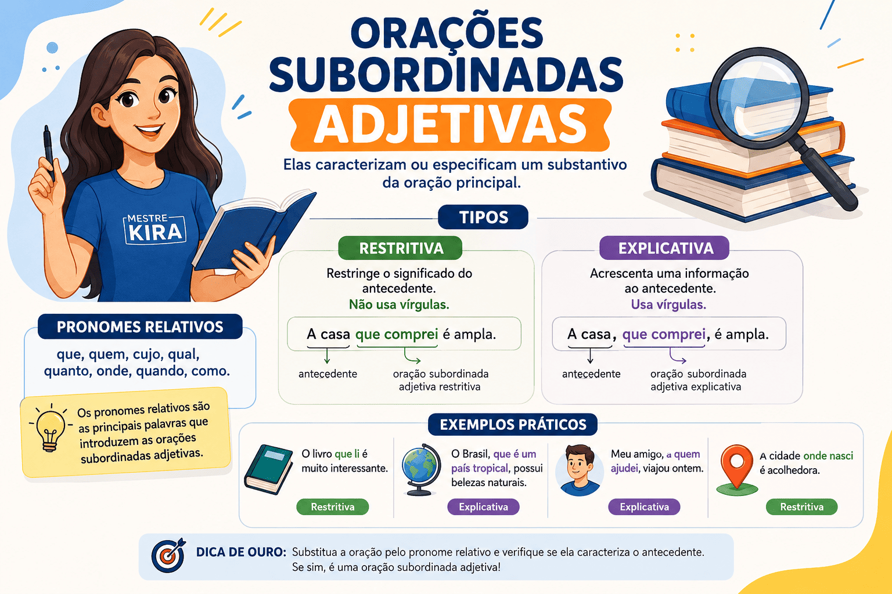
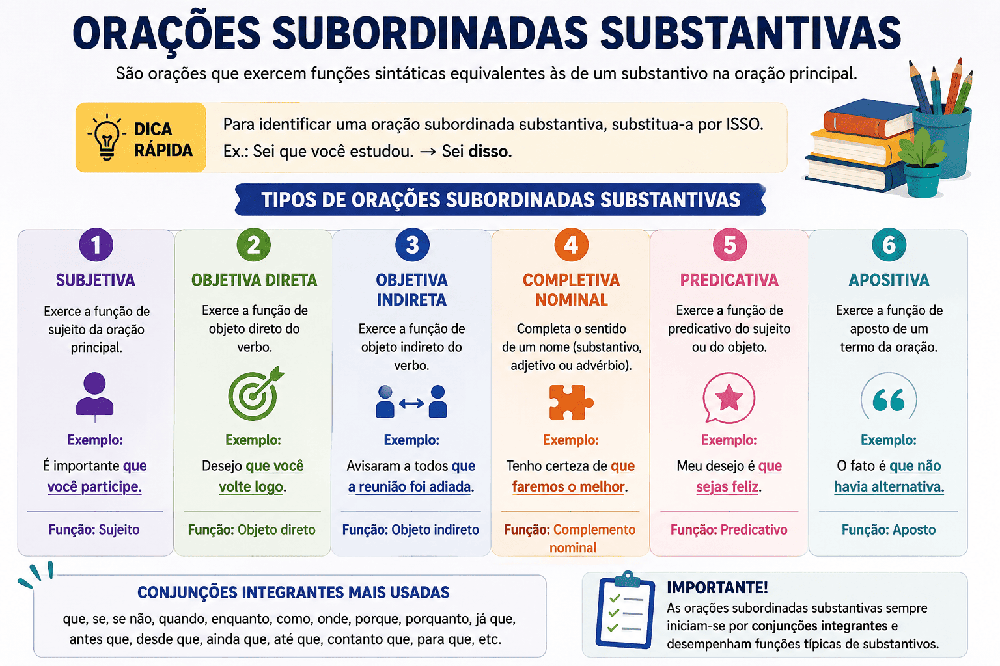

Orações Subordinadas Adjetivas: o que são, tipos, exemplos e como identificar
As orações subordinadas adjetivas são orações que exercem a função de um adjetivo, isto é, caracterizam, especificam ou explicam um substantivo ou pronome presente na oração principal. Geralmente, são introduzidas por pronomes relativos, como que, quem, cujo, cuja, onde, o qual, a qual, os quais e as quais.

Esse conteúdo é bastante cobrado no ENEM, no PAES UEMA e em diversos concursos públicos, especialmente em questões de análise sintática, interpretação textual, emprego dos pronomes relativos e uso da vírgula.
Compreender esse assunto é fundamental para interpretar corretamente os textos e identificar quando uma informação restringe o significado de um termo ou apenas acrescenta uma explicação.
O que são orações subordinadas adjetivas?
As orações subordinadas adjetivas são orações dependentes da oração principal que desempenham a mesma função de um adjetivo.
Elas modificam um substantivo ou pronome da oração principal, denominado antecedente, atribuindo-lhe uma característica.
Observe o exemplo:
Os alunos que estudam diariamente conseguem melhores resultados.
A oração que estudam diariamente caracteriza o substantivo alunos, funcionando como um adjetivo.
Compare:
- Os alunos estudiosos conseguem melhores resultados.
- Os alunos que estudam diariamente conseguem melhores resultados.
Nas duas frases existe uma característica atribuída ao substantivo "alunos". A diferença é que, na segunda, essa característica é expressa por uma oração.
Quais são os pronomes relativos?
As orações subordinadas adjetivas normalmente começam por um pronome relativo, responsável por retomar um termo citado anteriormente.
Os principais pronomes relativos são:
- que
- quem
- o qual, a qual, os quais, as quais
- cujo, cuja, cujos, cujas
- onde
- quanto
Exemplo:
Comprei um livro que explica toda a matéria.
O pronome relativo que retoma o substantivo livro.
Tipos de orações subordinadas adjetivas
As orações subordinadas adjetivas classificam-se em dois tipos:
- orações subordinadas adjetivas restritivas;
- orações subordinadas adjetivas explicativas.
Orações subordinadas adjetivas restritivas
As orações subordinadas adjetivas restritivas limitam ou especificam o significado do substantivo ao qual se referem.
Sem essa oração, o sentido da frase é alterado.
Exemplo:
Os candidatos que estudaram foram aprovados.
Nesse caso, apenas os candidatos que estudaram foram aprovados. A oração restringe o grupo de candidatos.
Por isso, não se empregam vírgulas.
Mais exemplos
- Os livros que comprei são excelentes.
- As pessoas que praticam exercícios vivem melhor.
- Os alunos que fizeram a revisão acertaram mais questões.
- Os professores que participaram do projeto receberam certificado.
Orações subordinadas adjetivas explicativas
As orações subordinadas adjetivas explicativas apenas acrescentam uma informação sobre o antecedente, sem restringir seu significado.
Como representam uma informação acessória, aparecem entre vírgulas.
Exemplo:
Os candidatos, que estavam nervosos, aguardavam o resultado.
A oração informa que todos os candidatos estavam nervosos naquele momento.
Mais exemplos
- Brasília, que é a capital do Brasil, foi inaugurada em 1960.
- Meu pai, que é professor, gosta de literatura.
- Maria, que mora em São Luís, passou no vestibular.
- O Sol, que é uma estrela, fornece energia para a Terra.
Diferença entre oração subordinada adjetiva restritiva e explicativa
| Restritiva | Explicativa |
|---|---|
| Restringe o significado do substantivo. | Acrescenta apenas uma informação. |
| Não utiliza vírgulas. | É separada por vírgulas. |
| Seleciona parte do grupo. | Refere-se ao grupo inteiro. |
| Informação essencial. | Informação acessória. |
Compare os exemplos
Sem vírgula:
Os professores que chegaram cedo participaram da reunião.
Apenas alguns professores chegaram cedo.
Com vírgula:
Os professores, que chegaram cedo, participaram da reunião.
Todos os professores chegaram cedo.
Perceba que a presença das vírgulas modifica completamente o sentido da frase, aspecto frequentemente explorado em provas de vestibulares.
Como identificar uma oração subordinada adjetiva?
Para identificar uma oração subordinada adjetiva, siga estes passos:
- Procure um pronome relativo.
- Verifique qual termo ele retoma.
- Observe se a oração caracteriza esse termo.
- Analise se a característica restringe ou apenas explica.
- Confira o uso das vírgulas.
Principais pronomes relativos com exemplos
Que
A casa que alugamos fica perto da universidade.
Quem
Conheço o professor por quem todos têm grande admiração.
Cujo
Conheci o autor cujo livro venceu o prêmio.
Onde
Visitei a cidade onde nasci.
O qual
O relatório, o qual foi entregue ontem, será analisado.
Orações subordinadas adjetivas no ENEM, no PAES UEMA e nos vestibulares
As bancas costumam explorar esse conteúdo em diferentes contextos gramaticais e interpretativos.
- Uso correto da vírgula.
- Diferença entre orações restritivas e explicativas.
- Emprego dos pronomes relativos.
- Reescrita de períodos.
- Interpretação dos efeitos de sentido provocados pela pontuação.
É comum que uma única vírgula altere completamente o significado da frase, tornando esse um dos assuntos mais importantes da sintaxe do período composto.
Resumo
- As orações subordinadas adjetivas exercem função de adjetivo.
- Caracterizam um substantivo ou pronome da oração principal.
- São introduzidas, normalmente, por pronomes relativos.
- Podem ser restritivas ou explicativas.
- As restritivas não utilizam vírgulas.
- As explicativas aparecem entre vírgulas.
- O uso da vírgula altera o sentido da frase.
Perguntas frequentes sobre orações subordinadas adjetivas
O que são orações subordinadas adjetivas?
São orações que desempenham a função de adjetivo, caracterizando ou especificando um substantivo ou pronome da oração principal.
Quais são os tipos de oração subordinada adjetiva?
Existem dois tipos: restritiva e explicativa. A restritiva limita o significado do antecedente, enquanto a explicativa apenas acrescenta uma informação sobre ele.
Como identificar uma oração subordinada adjetiva?
Observe a presença de um pronome relativo que retoma um termo anterior e introduz uma oração que caracteriza esse termo.
Qual é a diferença entre oração restritiva e explicativa?
A restritiva não utiliza vírgulas porque a informação é essencial. A explicativa utiliza vírgulas por apresentar uma informação acessória.
Esse conteúdo é cobrado no ENEM e no PAES UEMA?
Sim. É um dos temas mais frequentes nas questões de sintaxe, interpretação textual, pontuação e análise dos efeitos de sentido produzidos pelo uso das vírgulas.
Orações Subordinadas Substantivas: o que são, tipos, exemplos e como identificar
As orações subordinadas substantivas são um dos conteúdos mais importantes da Sintaxe e aparecem com frequência em provas do PAES UEMA, ENEM, vestibulares e concursos públicos. Dominar esse assunto permite compreender melhor a estrutura dos períodos compostos, interpretar textos com mais precisão e resolver questões de análise sintática.

Neste guia completo, você aprenderá o que são as orações subordinadas substantivas, conhecerá seus seis tipos, verá exemplos comentados, aprenderá técnicas para identificá-las rapidamente e descobrirá as principais diferenças entre classificações que costumam gerar dúvidas nas provas.
O que são orações subordinadas substantivas?
As orações subordinadas substantivas são orações que desempenham a mesma função sintática que um substantivo exerce em uma oração simples. Elas dependem da oração principal para fazer sentido e exercem funções como sujeito, objeto, complemento nominal, predicativo ou aposto.
Na maioria das vezes, essas orações são introduzidas pelas conjunções integrantes que ou se.
Observe o exemplo:
Espero que você seja aprovado.
Nesse período temos:
- Oração principal: Espero.
- Oração subordinada substantiva: que você seja aprovado.
A oração subordinada exerce a função de objeto direto do verbo esperar. Isso significa que toda a oração poderia ser substituída por um substantivo.
Compare:
Espero a aprovação.
Espero que você seja aprovado.
Nos dois casos, o termo destacado desempenha exatamente a mesma função sintática.
Como identificar uma oração subordinada substantiva?
Uma das maneiras mais eficientes consiste em substituir toda a oração por um substantivo ou pelo pronome isso.
Veja:
O professor afirmou que a prova será difícil.
Substituindo:
O professor afirmou isso.
Como a substituição mantém a estrutura da frase, podemos concluir que a oração destacada exerce uma função substantiva.
Outra estratégia importante consiste em identificar qual função sintática a oração exerce dentro da oração principal. Essa análise permitirá classificá-la corretamente.
Características das orações subordinadas substantivas
As orações subordinadas substantivas apresentam algumas características que ajudam bastante em sua identificação.
- Fazem parte de um período composto.
- Dependem sintaticamente da oração principal.
- Exercem funções típicas de um substantivo.
- São normalmente introduzidas pelas conjunções integrantes que ou se.
- Podem exercer seis funções sintáticas diferentes.
- Podem ser substituídas por um substantivo ou pelo pronome "isso" sem alterar a estrutura sintática.
Essas características são fundamentais para resolver questões de classificação de orações em provas de gramática e interpretação textual.
Quais são os tipos de orações subordinadas substantivas?
As orações subordinadas substantivas podem exercer diferentes funções sintáticas dentro da oração principal. Por esse motivo, elas são classificadas em seis tipos.
- Oração subordinada substantiva subjetiva;
- Oração subordinada substantiva objetiva direta;
- Oração subordinada substantiva objetiva indireta;
- Oração subordinada substantiva completiva nominal;
- Oração subordinada substantiva predicativa;
- Oração subordinada substantiva apositiva.
A seguir, veremos cada uma delas detalhadamente.
Oração subordinada substantiva subjetiva
A oração subordinada substantiva subjetiva exerce a função de sujeito da oração principal. Geralmente aparece em construções com verbos impessoais, verbos na terceira pessoa do singular ou expressões impessoais, como:
- é necessário;
- é importante;
- é possível;
- convém;
- basta;
- parece.
Observe o exemplo:
É importante que todos estudem.
Pergunta-se:
O que é importante?
Resposta:
Que todos estudem.
Nesse caso, toda a oração exerce a função de sujeito da oração principal.
Outro exemplo:
Convém que vocês revisem o conteúdo.
Dica para identificar
Sempre que a oração responder à pergunta "o que é?" ou representar aquilo sobre o qual se faz uma afirmação, há grande possibilidade de ser uma oração subordinada substantiva subjetiva.
Oração subordinada substantiva objetiva direta
A oração subordinada substantiva objetiva direta exerce a função de objeto direto do verbo da oração principal.
Como todo objeto direto, ela não exige preposição.
Observe:
Acredito que tudo dará certo.
Pergunta:
Acredito o quê?
Resposta:
Que tudo dará certo.
A oração subordinada completa diretamente o sentido do verbo acreditar.
Outro exemplo:
O professor explicou que haveria revisão.
Dica para identificar
Uma boa estratégia consiste em substituir toda a oração por "isso".
Acredito isso.
Se a substituição funcionar sem necessidade de preposição, trata-se de uma objetiva direta.
Oração subordinada substantiva objetiva indireta
A oração subordinada substantiva objetiva indireta exerce a função de objeto indireto, ou seja, completa um verbo que exige preposição.
A presença da preposição é determinada pela regência verbal.
Exemplo:
Preciso de que você compareça.
Pergunta:
Preciso de quê?
Resposta:
De que você compareça.
Outro exemplo:
Insistimos em que todos participassem.
Dica para identificar
Verifique se a preposição está sendo exigida pelo verbo da oração principal. Se estiver, a classificação será objetiva indireta.
Oração subordinada substantiva completiva nominal
A oração subordinada substantiva completiva nominal exerce a função de complemento nominal. Ela completa o sentido de um nome, que pode ser um substantivo, um adjetivo ou um advérbio.
Assim como ocorre com o complemento nominal, a oração vem sempre ligada ao nome por uma preposição.
Exemplo:
Tenho certeza de que ele chegará cedo.
Pergunta:
Certeza de quê?
Resposta:
De que ele chegará cedo.
Outro exemplo:
Estamos confiantes em que tudo dará certo.
Como diferenciar da objetiva indireta?
Essa é uma das maiores dificuldades dos estudantes.
O segredo está em observar quem exige a preposição.
- Se a preposição for exigida pelo verbo, a oração será objetiva indireta.
- Se a preposição for exigida por um nome (substantivo, adjetivo ou advérbio), será completiva nominal.
Oração subordinada substantiva predicativa
A oração subordinada substantiva predicativa exerce a função de predicativo do sujeito.
Ela normalmente aparece após verbos de ligação, como:
- ser;
- estar;
- parecer;
- permanecer.
Observe:
A verdade é que ninguém sabia da reunião.
A oração que ninguém sabia da reunião caracteriza o sujeito "A verdade", funcionando como predicativo.
Outro exemplo:
O problema era que faltavam documentos.
Oração subordinada substantiva apositiva
A oração subordinada substantiva apositiva exerce a função de aposto, explicando, resumindo ou esclarecendo um termo anterior.
É comum aparecer após dois-pontos ou depois de palavras como:
- fato;
- ideia;
- esperança;
- certeza;
- notícia;
- desejo.
Observe:
Só desejo uma coisa: que todos sejam felizes.
Outro exemplo:
Tenho apenas uma esperança: que tudo melhore.
Nesse tipo de construção, a oração subordinada explica ou especifica o termo que a antecede, funcionando como um aposto explicativo.
Quadro-resumo dos tipos de orações subordinadas substantivas
| Tipo | Função sintática | Pergunta que ajuda na identificação |
|---|---|---|
| Subjetiva | Sujeito | O que é? |
| Objetiva direta | Objeto direto | Verbo + o quê? |
| Objetiva indireta | Objeto indireto | Verbo + preposição + quê? |
| Completiva nominal | Complemento nominal | Nome + preposição + quê? |
| Predicativa | Predicativo do sujeito | Caracteriza o sujeito. |
| Apositiva | Aposto | Explica ou esclarece um termo anterior. |
Exemplos comentados de orações subordinadas substantivas
A melhor maneira de compreender as orações subordinadas substantivas é observar como elas aparecem em diferentes contextos. Nos exemplos abaixo, a oração subordinada está destacada e sua função sintática é explicada.
Exemplo 1 — Oração subordinada substantiva subjetiva
É preciso que todos estudem diariamente.
A oração que todos estudem diariamente exerce a função de sujeito da oração principal.
Classificação: oração subordinada substantiva subjetiva.
Exemplo 2 — Oração subordinada substantiva objetiva direta
Desejo que você alcance seus objetivos.
A oração subordinada completa diretamente o sentido do verbo desejar, sem o uso de preposição.
Classificação: oração subordinada substantiva objetiva direta.
Exemplo 3 — Oração subordinada substantiva objetiva indireta
Necessitamos de que todos compareçam à reunião.
O verbo necessitar exige a preposição de. Por isso, a oração exerce a função de objeto indireto.
Classificação: oração subordinada substantiva objetiva indireta.
Exemplo 4 — Oração subordinada substantiva completiva nominal
Tenho esperança de que tudo dará certo.
A oração completa o sentido do substantivo esperança, e não do verbo.
Classificação: oração subordinada substantiva completiva nominal.
Exemplo 5 — Oração subordinada substantiva predicativa
A realidade é que poucos revisam o conteúdo regularmente.
A oração exerce a função de predicativo do sujeito, caracterizando o termo a realidade.
Classificação: oração subordinada substantiva predicativa.
Exemplo 6 — Oração subordinada substantiva apositiva
Fiz apenas um pedido: que permanecessem em silêncio.
A oração explica o conteúdo do substantivo pedido, funcionando como aposto.
Classificação: oração subordinada substantiva apositiva.
Como esse conteúdo é cobrado no PAES UEMA, ENEM e vestibulares?
As orações subordinadas substantivas são um tema recorrente nas provas de Língua Portuguesa porque envolvem conhecimentos de sintaxe, interpretação textual e regência verbal e nominal.
Em vez de solicitar apenas a classificação da oração, muitas bancas apresentam textos completos e pedem que o candidato analise a função desempenhada pela oração dentro do período.
Entre as competências mais cobradas estão:
- identificar a oração subordinada substantiva;
- classificar corretamente cada tipo;
- reconhecer a função sintática desempenhada pela oração;
- diferenciar objetiva indireta de completiva nominal;
- identificar as conjunções integrantes que e se;
- relacionar a análise sintática à interpretação do texto.
No PAES UEMA, esse conteúdo costuma aparecer em questões contextualizadas, exigindo que o candidato compreenda tanto a estrutura sintática quanto os efeitos de sentido produzidos pela construção do período composto.
Principais erros dos estudantes
Mesmo conhecendo a teoria, muitos candidatos cometem erros na classificação das orações subordinadas substantivas. Os equívocos mais frequentes são:
- confundir oração subordinada substantiva objetiva indireta com completiva nominal;
- considerar toda oração iniciada por que como subordinada substantiva;
- não observar a regência verbal ou nominal;
- esquecer de identificar a função sintática exercida pela oração;
- confundir conjunção integrante com pronome relativo.
Evitar esses erros exige prática constante na análise dos períodos e atenção à função desempenhada pela oração dentro da estrutura sintática.
Dicas para identificar rapidamente as orações subordinadas substantivas
Algumas estratégias facilitam bastante a identificação desse tipo de oração durante as provas.
- Localize primeiro a oração principal.
- Identifique o verbo principal.
- Verifique se existe alguma preposição.
- Descubra se essa preposição é exigida pelo verbo ou por um nome.
- Substitua a oração inteira pelo pronome isso.
- Pergunte qual função sintática a oração exerce dentro da principal.
- Observe se a oração funciona como sujeito, objeto, complemento nominal, predicativo ou aposto.
Quanto maior for o contato com exemplos variados, mais rápida será a identificação da classificação correta.
Resumo
As orações subordinadas substantivas desempenham funções típicas dos substantivos dentro do período composto. Elas podem exercer a função de sujeito, objeto direto, objeto indireto, complemento nominal, predicativo do sujeito ou aposto.
O reconhecimento dessas funções depende da análise sintática da oração principal, da observação da regência verbal e nominal e da identificação da função exercida pela oração subordinada.
Dominar esse conteúdo é essencial para resolver questões de sintaxe, interpretação textual e gramática em provas como o PAES UEMA, ENEM, vestibulares e concursos públicos.
Perguntas frequentes sobre orações subordinadas substantivas
O que é uma oração subordinada substantiva?
É uma oração que depende da oração principal e exerce uma função sintática equivalente à de um substantivo, podendo atuar como sujeito, objeto, complemento nominal, predicativo ou aposto.
Quantos tipos de orações subordinadas substantivas existem?
Existem seis tipos: subjetiva, objetiva direta, objetiva indireta, completiva nominal, predicativa e apositiva.
Como identificar uma oração subordinada substantiva?
Uma forma prática consiste em substituir toda a oração pelo pronome isso. Em seguida, deve-se verificar qual função sintática ela exerce na oração principal.
Qual é a diferença entre objetiva indireta e completiva nominal?
Na objetiva indireta, a preposição é exigida pelo verbo da oração principal. Na completiva nominal, a preposição é exigida por um nome, como um substantivo, adjetivo ou advérbio.
As orações subordinadas substantivas são cobradas no PAES UEMA?
Sim. O tema aparece frequentemente em questões de análise sintática, interpretação textual, classificação das orações e regência verbal e nominal, sendo um dos conteúdos mais importantes da sintaxe do período composto.
Quais conjunções normalmente introduzem as orações subordinadas substantivas?
Na maioria dos casos, elas são introduzidas pelas conjunções integrantes que e se, que estabelecem a ligação entre a oração principal e a oração subordinada.
Quiz — Orações Subordinadas Adjetivas (nível intermediário)
Questão 1 — Em qual alternativa há uma oração subordinada adjetiva restritiva?
Questão 2 — A oração destacada em "Os livros que comprei são excelentes" é classificada como:
Questão 3 — Em qual alternativa a oração subordinada adjetiva é explicativa?
Questão 4 — A principal diferença entre as orações subordinadas adjetivas restritivas e explicativas está:
Questão 5 — Em qual alternativa o uso da vírgula está correto?
Questão 6 — O pronome relativo exerce qual função nas orações subordinadas adjetivas?
Questão 7 — Em "Os professores que participaram do projeto receberam certificado", a oração destacada:
Questão 8 — Em "A Amazônia, que abriga grande biodiversidade, merece proteção", a oração destacada é:
Questão 9 — Qual pronome relativo foi empregado corretamente?
Questão 10 — A ausência das vírgulas em uma oração subordinada adjetiva normalmente indica que ela é:
Referências
ABAURRE, Maria Luiza M.; ABAURRE, Maria Bernadete M. Gramática: Texto, Análise e Construção de Sentido. São Paulo: Moderna, 2021.
BECHARA, Evanildo. Moderna Gramática Portuguesa. 39. ed. Rio de Janeiro: Nova Fronteira, 2019.
CUNHA, Celso; CINTRA, Lindley. Nova Gramática do Português Contemporâneo. 7. ed. Rio de Janeiro: Lexikon, 2017.
INFANTE, Ulisses. Curso de Gramática Aplicada aos Textos. São Paulo: Scipione, 2018.
ROCHA LIMA, Carlos Henrique da. Gramática Normativa da Língua Portuguesa. 53. ed. Rio de Janeiro: José Olympio, 2018.
Explore Outros Conteúdos
Continue seus estudos acessando outras seções do site Mestre Kira: